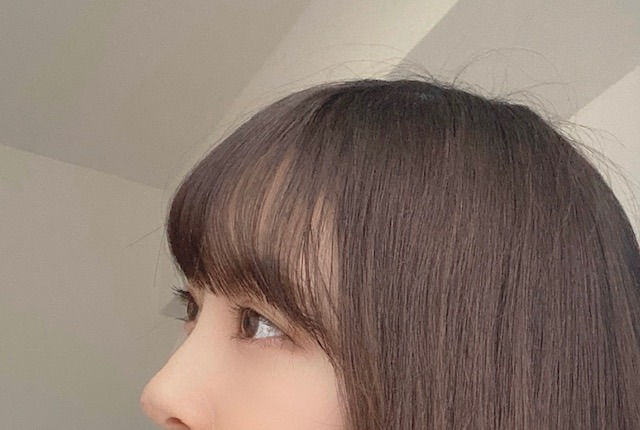

2020/0429Wed空が綺麗です
ぎりぎり、こんにちは
私は
起きてすぐカーテンを開けて
天気を確認します
そして空を見ます
今日の空は凄く綺麗でしたね
夜も窓を開けて
夜風に当たりながらボーっとしてます
ひたすらボーっと

髪色も抜けてきてすっかり茶色ですし
早くトリートメントとカラーをしに
美容院へ行きたいです
あとずっと食べてしまってます...
気をつけないと
最近は餃子と生ハムにハマってます
あと炭水化物も好きなので困ってます
野菜中心生活にまた戻さなきゃ
頑張ります
ᕦ(ò_óˇ)ᕤ


ロングが好きって言ってくださる方もいて
嬉しかったです!
いつかまたやれたらいいな
でもいまはショートボブが気に入ってます☺︎


ギリギリ結べる長さなんだっ
写真集についてのお知らせ、
また近々出ると思います!
新しい企画も用意しているので
公式Twitter
@horimiona2nd
公式Instagram
@horimiona_2nd
のほうをチェックお願いします☺︎
公式Twitterの方は
信頼おける写真集チームのスタッフさんに
全てお任せしていて
公式Instagramの方はストーリーや投稿を
私自身でやらせていただいています!
発売まで1か月を切りましたが
たくさんの方に楽しんでいただけたらいいなぁ✨
乃木坂46の堀未央奈として
自信を持ってみなさんに見ていただけるような
素敵な一冊となっていますので
5月27日まで、お楽しみに☺︎
ポスターやポストカードも
店舗ごとに違うので要チェックです♩
じゃあねっ
2020/04/29 16:30


コメント(448)
写真集めっちゃ楽しみ！！！
ブログ更新ありがとう
「エスケープ」(手嶋葵さん)、聴きました！
前向きになれるいい曲ですね！
次回のMステは乃木坂ちゃん、日向坂、TWICEが出演（過去放送分)、絶対に見ないと
野菜はアボカドが最近好きです。
未央奈ちゃんは好きですか？
健康に気を付けてくださいね。
今日はまいちゅんのオールナイトニッポン聴きながら寝ます。
未央奈ちゃん大好きです
写真集の表紙公開はまだ先ですか～？
アップトゥボーイ予約したので楽しみです♪
みおなちゃんはどんな髪型でもかわいいけど、
私はロングが特に好きで、みおなちゃんに憧れて今髪の毛伸ばし中です！笑
ショートボブ。
可愛くて素敵です。
2nd写真集すごく楽しみにしてます。
未央奈 推しとして、買います。
未央奈のロングもショートも好きだよ(*´ω`*)
最近ダラダラしてるから柔軟と筋トレをするようにしてるんだぁでもまだまだだなぁ爆笑
おれはどの髪型の未央奈も大好きだけど、
ボブが好きだなぁ☺️
結局どれもすばらしく可愛いんだけどね笑笑
写真集近づいてきたね！！楽しみ！！
体調には気をつけてね。
じゃあねっ
お家にいると口が寂しくなって食べちゃいますよね( ；∀；)
餃子いいですね(*･ω･)餃子だと、ホワイト餃子が大好きです
自粛で家にいることがほとんどかと思いますが、お身体に気をつけてくださいね(*^-^)未央奈ちゃんが様々なsnsで投稿してくださるので、毎日楽しく過ごせています。本当にありがとうございます。
本当に、本当に大好き！！ロングの未央奈が大好き
未央奈が大好きです
朝、日光浴びると気持ちいいですよね。
黒未央奈も好きですけど、茶未央奈も好きです。
ショート未央奈も好きですけど、ロング未央奈も好きです。
とにかく未央奈が何しても好きです❗️
(流石になんでもはウソですけど)
次のブログと写真集楽しみです❗️
鼻から上だけでも綺麗なのが分かるーーーー
次の髪型も楽しみやなーー
ダイエットは無理しやんようになーー
体調には気をつけてーー
ずっと応援しとるよーー
未央奈先生、いよいよですねっ
こういう時だからこそ、楽しくいきましょう
次に備えて準備体操も忘れずに。
see you！ (^^)/
堀ちゃん、本当にお美しい！
堀ちゃん、大好きだよー
生ハム旨いよね。
堀ちゃんはやっぱショートボブが似合ってると思います。
写真集早くみたい。
またプティくんがみたいなーー
ライブや握手会で会えるのを楽しみにしてます
家にいるとついつい食べちゃうよね(>_<)
僕もこの頃太ってきたのでトレーニングの負荷を
多めにしようと思ってます！
今日はいい天気だったね(^^)
春の陽気でポカポカしてて気持ちよかったなぁ！
明日からは暑くなるらしいから未央奈も気温差には
気をつけてね！
写真集本当に楽しみです！
僕の誕生日に近いので未央奈からのプレゼントかな？笑
インスタとTwitterの更新待ってるね！(^^)
今日もお疲れ様！
次の更新も楽しみに待ってるね！
7thバスラのthree fold choiceの未央奈さん可愛すぎてほんと癒されてます笑
個人的にはボブが好きです！ロングも好きやけど笑
写真集楽しみに待ってます！！
れん
ショートもロングも堀ちゃん似合ってる！僕的にはショートが好きかなぁ朝はカーテンは気づいたら親に開けられてるんで目が覚めたら天気いい日は朝の目覚めがサイコーです！親に開けられるっていうことは早起き苦手っていうことになっちゃうんだけどねw
堀ちゃん早起き得意ですか？
ブログ更新、ありがとうございます♪
こんにちは‼︎
ブログ更新、ありがとうございます♪
美容院、行きたいですよね〜
自分も、しばらく美容院に行けていないので、なんかすごい髪型になってます(苦笑)。
まあ、医療従事者の方々の苦労を考えれば、これぐらいの我慢はなんてことないんですけど。
家にいると食べ続けちゃうっていうのも、全くの同感です‼︎
食べ物がすぐ手に届くところにありますからね。
在宅ワークって難しい(苦笑)。
自分は、どうしても食べ物を控えるのは難しいし、いわゆるダイエットみたいな行為は抵抗力を下げてしまうみたいなので、家の中でも運動量を増やす取組をしたいと思ってます‼︎
ヨガ、ストレッチ、筋トレなんかがメインですかね♪
あと、朝早く起きて、人気のない道を選んでランニングする取組も最近始めました‼︎
朝早いと気持ちがいいし、時間帯と道を選べばほとんど人と会わないし、会ったとしても人が少なければソーシャル・ディスタンスを保てるので、オススメですよ♪
最近、ちょっと思ったこと。
乃木坂のキャッチフレーズ、『努力、感謝、笑顔』。
どんな状況にもヒントを与えてくれる、魔法の言葉だなって思います♪
努力：
感染しない、感染させないために、それぞれが今出来ることを頑張る。
不要不急の外出はしない。
手洗い、うがいをまめにして、どうしても外出しなければならない時はマスクをして、ソーシャル・ディスタンスを守り、規則正しい生活、バランスの良い食事をする。
感謝：
自分たちの危険も顧みず、我々の命を救うために、日夜必死に働いてくれている医療従事者・エッセンシャルワーカーの人々に感謝する。
最前線で頑張ってくれている人たちへの、敬意と尊敬の念を忘れない。
笑顔：
今後世の中がどうなっていくのか、先が見えず不安になることもあるけど、どんな状況になっても下を向かず、笑顔を忘れず、ポジティブに。
明るい未来を信じて、前向きに。
これからもウイルスとの戦いは続いていくでしょうし、乗り越えていくべき課題はたくさんありますが、『努力、感謝、笑顔』を忘れずに、みんなで頑張っていきたいですね‼︎
ではでは、また。
明日も未央奈にとっていい1日になりますように♪
毎日ブログありがとうございます
写真集楽しみにしてますね！
朝の空気はいいですよね。
ちょっと寒いけど（笑）
そろそろ夜風もいい時期ですね。
お顔のチェック･･･
いや、なんでもないですぞ！！（笑）
かれーらいすおいしかったな～
今のみおな魅力的なんだぜ！
だいぶ日が長くなってきました。春の4月と秋の10月が1年の中では一番好きです。本来ならみんな連休を満喫しているはずだったになー。でも毎日美味しいものをたべて、趣味に没頭できる私の人生は幸せだと自覚しなくては。
ではまた。
ロングが久しぶりに見れて良かった～
似合ってた！
だけどボブの堀ちゃんも好き
私もボブしたいなぁ
だけど成人式まで髪切れない。。
成人式では結いたいからなぁ
ではまた(*´∇｀*)
空綺麗だね(〃^ー^〃)
空見てると気持ちよくなるなあ
今日もたくさん写真ありがとう(*^^*)
元気出たよ♪
明日もHAPPYを
お休みなさい(^-^ゞ
以前コメントした気がする！ 恐らく俺のコメントは
気付いてないだろうけど、読まれてると思うので、
俺のコメントでも読んで嬉しくなったら俺も嬉しいな
とても可愛いよ
気に入ってるよ
夜もします。
次の日の天気が気になるのもあるけど、夜中に天気が悪くなりそうなら窓を閉めて寝ないといけないので毎晩確認ます。
月も星も見ます。
星はあまり見えないんですが。
空を気にし過ぎでしょうかね。
(^ー^)
野菜中心生活は私には無理そうです。
毎日の楽しみと化してるよ˙ᵕ˙
今日は天気も良くて、あったかかったね！
お部屋に篭りがちだけど、日光浴びないとね٩( ᐛ )و
今の髪の長さ好きだな〜
私もあと少し伸ばせば、同じぐらいの長さ☺︎
真似して少し伸ばそうかな٩( ᐛ )و
写真集発売まであと1ヶ月ないね！
楽しみ楽しみ
大好きです！！！早く会いたい〜！！
あと、おすすめの映画は、ナルニア国物語！！本当に観ないと人生損してるぐらいすっごく面白いから見てほしい！！私は原作が好きで、本読みながら映画のBGM流して寝る前に読んでる笑笑
みおちゃんと握手会で映画の話とか色々したいなぁ。写真集買って我慢するね笑笑
ももんが
ロングもショートも似合ってて可愛くって、好きです♡
未央奈ちゃんみたいな女の子になりたくって、髪型とか参考にさせてもらってます！いつもありがとう！
写真集楽しみにしてます！早く届かないかな〜
家から出れないときにブログで堀ちゃん見れてほんと嬉しいよ。
餃子ほんと好きだね、生ハムも美味しいよね
生ハムは世界旅を思い出します。
食べたら運動がいいかもですね。
自分はロングが好きでしたけどボブも好きです
また伸ばすの楽しみにしときます。
でも1番の好みはポニテです。
でも全部似合うし可愛いんで贅沢はいいませんよ。
なんでもいいです。
写真集楽しみ！あと約1ヶ月待ちきれないよ。
もちろん何冊も予約してます！！
ではまた！
こんばんは
続けてコメントします
会社が休みになって5日目ですが、そろそろやる事が枯渇しだして、暇になってきました
部屋の掃除、溜まっていた録画の視聴、洗車、猿に会う、映像研には手を出すなを観る等して、過ごしました
後は、新しく買ったリメイクバイオ3をやり込んだらやる事なくてプチ禁固状態です笑（ゲームはゆっくりやり込んでもせいぜい1週間が限度かな）
休みはまだ1週間以上あるので、何か探します
最近は、いい天気が続いてGWだから本当ならお手掛け日和だけど、そうも行かないので、こうして家にいます
過ごし方のおすすめを教えて下さい！
ちなみにホットギミックは5回見たから、とりあえず大丈夫です笑
休みで必然的に歩く事が減ってるので、筋トレはしてます
運動量は減ってるのに食べる方は並なので体重管理に気をつけます（俺は61㎏〜62㎏がベストです）
背は180㎝だから最低でも70㎏くらいあった方がいいらしいけど、このままの生活だと悪く体重が増えちゃうから気をつけます
今は写真集を楽しみにしてます（残り1ヶ月！）
こないだのブログで載せてた、多分ロングのウィッグのやつをもう一度見たいです（俺の中ではハリウッドみおな）
またコメントします
ありがとうございました
P.S.今日のいい事は、目が覚めて時計を見たら10時15分だった事です！
毎日ありがとね。
昨日のブログ。おうちにいても対策。さすがだね。
未央奈さんのような発信力のある方が、声を上げてくれると助かります。
自分は、どうしても仕事にいかなければならないので。同じ物流センターで働いてる約500人。みんな、命をかけて仕事してます。
だから、家から出る必要のない人には、本当に家から出ないで欲しいんだ。
社会のために、どうしても仕事をしなければならない人がいる。それを、わかって欲しい。
自分は、これまでよりも早く出勤して、毎日除菌液の入ったタンクを背負って、社内の除菌、消毒をやっています。
だからね、インフルエンサーである未央奈さんが、おうち時間をすすめてくれるようなブログを上げてくれることに、本当に感謝してるんだよ。
未央奈。マジで、大好き！
あまり無理をせず、少しだけ、ペースおとしたら？
ひでき
コメントする